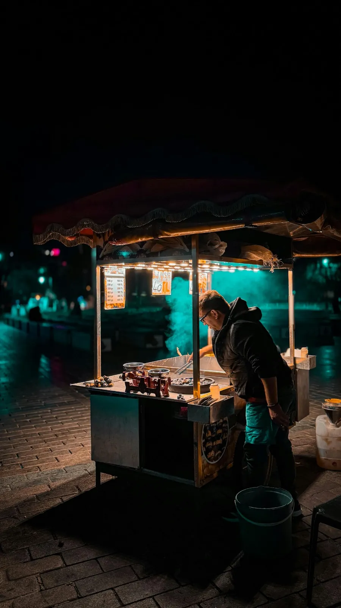

Artikel
Cara Memilih Tempat Usaha Terbaik di Bali Agar Bisnis Tidak Sepi

Bali menjadi salah satu daerah dengan pertumbuhan bisnis yang cukup cepat dalam beberapa tahun terakhir. Tidak hanya sektor pariwisata, berbagai usaha seperti kuliner, coffee shop, fashion, coworking space, salon, retail, hingga bisnis kreatif terus berkembang di berbagai wilayah Bali. Hal ini membuat permintaan terhadap ruko, toko, kios, dan bangunan usaha semakin meningkat, terutama di area yang dianggap strategis.
Namun dalam praktiknya, banyak pelaku usaha justru mengalami kerugian bukan karena produk yang buruk, melainkan karena salah memilih lokasi usaha. Banyak orang terlalu fokus mencari tempat murah tanpa memperhitungkan potensi traffic, karakter pasar, akses jalan, hingga lingkungan sekitar.
Padahal dalam dunia bisnis properti terdapat istilah terkenal “location is everything”. Istilah tersebut menggambarkan bahwa lokasi sering kali menjadi faktor utama yang menentukan apakah sebuah usaha dapat berkembang atau justru sepi pengunjung.
Karena itu, sebelum menyewa tempat usaha di Bali, penting untuk memahami bahwa memilih lokasi bisnis bukan sekadar mencari bangunan kosong, tetapi bagian dari strategi bisnis jangka panjang.
Memahami Karakter Setiap Wilayah di Bali
Salah satu kesalahan yang paling sering dilakukan pelaku usaha adalah memilih lokasi hanya karena area tersebut sedang populer. Padahal setiap daerah di Bali memiliki karakter pasar yang berbeda.
Canggu misalnya, lebih identik dengan wisatawan asing, digital nomad, café modern, dan bisnis lifestyle. Seminyak dikenal sebagai kawasan premium dengan banyak restoran, beach club, dan butik. Sementara Denpasar lebih kuat pada aktivitas ekonomi lokal dan kebutuhan masyarakat sehari-hari.
Ada juga Sanur yang memiliki pasar lebih stabil dan cocok untuk bisnis keluarga maupun wellness business. Sedangkan Ubud lebih dikenal sebagai area wisata budaya dan lifestyle yang menyasar pasar tertentu.
Karena itu, sebelum menyewa tempat usaha, penting untuk menyesuaikan lokasi dengan target pasar bisnis yang ingin dijalankan. Tidak semua jenis usaha cocok berada di semua wilayah.
Jangan Tertipu Harga Sewa Murah
Banyak orang langsung tertarik ketika menemukan ruko atau toko dengan harga sewa murah. Padahal harga murah belum tentu menguntungkan untuk bisnis.
Dalam praktik properti komersial, lokasi dengan harga lebih mahal sering justru memberikan peluang omzet lebih besar karena memiliki traffic pelanggan yang lebih tinggi.
Sebaliknya, tempat usaha murah tetapi berada di area sepi bisa menyebabkan bisnis sulit berkembang. Akibatnya, biaya operasional tetap berjalan tetapi pemasukan tidak sesuai harapan.
Karena itu, biaya sewa sebaiknya dilihat sebagai investasi bisnis, bukan sekadar pengeluaran bulanan.
Perhatikan Traffic dan Mobilitas Area
Salah satu faktor paling penting dalam memilih tempat usaha di Bali adalah tingkat mobilitas dan traffic di sekitar lokasi.
Bisnis yang mengandalkan pelanggan langsung seperti café, laundry, retail, minimarket, atau restoran sangat bergantung pada jumlah orang yang melewati area tersebut setiap hari.
Karena itu, sebelum menyewa tempat usaha, sebaiknya lakukan survei langsung pada beberapa jam berbeda. Perhatikan kondisi pagi, siang, sore, hingga malam hari untuk mengetahui pola keramaian area tersebut.
Banyak lokasi terlihat ramai di media sosial tetapi ternyata tidak memiliki traffic stabil dalam aktivitas sehari-hari.
Akses Jalan dan Area Parkir Sangat Penting
Salah satu alasan pelanggan enggan datang ke suatu tempat usaha adalah akses yang sulit dan parkir yang terbatas.
Di beberapa wilayah Bali, kemacetan dan jalan sempit sering menjadi kendala utama bagi bisnis tertentu. Karena itu, lokasi usaha sebaiknya memiliki akses kendaraan yang cukup nyaman, terutama apabila usaha menyasar pelanggan keluarga atau wisatawan.
Area parkir juga memiliki pengaruh besar terhadap kenyamanan pelanggan. Banyak bisnis sebenarnya memiliki produk bagus tetapi kehilangan pelanggan karena parkir terlalu sempit atau sulit diakses.
Dalam bisnis modern, kenyamanan pelanggan sering kali menentukan apakah mereka akan kembali atau tidak.
Pastikan Legalitas dan Izin Bangunan
Selain faktor lokasi, legalitas properti juga sangat penting sebelum menyewa tempat usaha di Bali.
Tidak sedikit kasus di mana bangunan ternyata memiliki masalah hukum, berada di zona yang tidak sesuai untuk usaha tertentu, atau bahkan masih dalam sengketa.
Karena itu, penyewa sebaiknya memastikan bahwa pihak yang menyewakan benar-benar memiliki hak atas properti tersebut dan bangunan dapat digunakan untuk kegiatan usaha.
Hal ini penting untuk mengurangi risiko hukum di kemudian hari, terutama bagi bisnis yang membutuhkan investasi renovasi dan branding dalam jumlah besar.
Perhatikan Potensi Perkembangan Area
Banyak pelaku usaha hanya melihat kondisi lokasi saat ini tanpa memperhatikan perkembangan kawasan dalam beberapa tahun ke depan.
Padahal dalam bisnis properti, pertumbuhan area sangat memengaruhi potensi usaha jangka panjang.
Lokasi yang saat ini masih berkembang terkadang justru memiliki peluang lebih besar dibanding area yang sudah terlalu padat dan mahal.
Karena itu, penting memperhatikan pembangunan infrastruktur, proyek komersial baru, pertumbuhan perumahan, hingga perkembangan wisata di sekitar lokasi usaha.
Jangan Asal Menandatangani Kontrak Sewa
Banyak orang terlalu fokus pada lokasi dan harga tetapi lupa memeriksa isi perjanjian sewa secara detail.
Padahal kontrak sewa merupakan salah satu aspek paling penting dalam bisnis properti. Hal-hal seperti kenaikan harga sewa, durasi kontrak, izin renovasi, pengembalian deposit, hingga pengakhiran sewa harus dijelaskan secara jelas.
Dalam hukum Indonesia, perjanjian yang dibuat secara sah memiliki kekuatan mengikat sebagaimana diatur dalam Pasal 1338 Kitab Undang-Undang Hukum Perdata (KUHPerdata).
Karena itu, sebelum menyetujui transaksi, penting untuk memahami seluruh isi kontrak agar tidak menimbulkan kerugian di kemudian hari.
Lokasi Usaha Adalah Bagian dari Branding
Di era modern, lokasi usaha bukan hanya tempat berjualan tetapi juga bagian dari identitas bisnis itu sendiri.
Coffee shop, salon, butik, hingga restoran kini sering dipilih pelanggan bukan hanya karena produk, tetapi juga karena suasana dan lokasi yang menarik.
Karena itu, memilih tempat usaha di Bali sebaiknya juga mempertimbangkan citra bisnis yang ingin dibangun. Lokasi yang sesuai dapat membantu meningkatkan branding dan memperkuat daya tarik usaha di mata pelanggan.
Jadi..
Memilih tempat usaha di Bali bukan hanya soal menemukan bangunan kosong dengan harga murah. Ada banyak faktor penting yang harus diperhatikan mulai dari karakter pasar, traffic area, akses jalan, legalitas properti, hingga potensi perkembangan wilayah.
Banyak bisnis gagal berkembang bukan karena produk yang buruk, tetapi karena salah memilih lokasi usaha sejak awal.
Karena itu, sebelum menyewa ruko, toko, atau bangunan usaha di Bali, penting untuk melakukan riset dan mempertimbangkan lokasi sebagai bagian utama dari strategi bisnis jangka panjang.